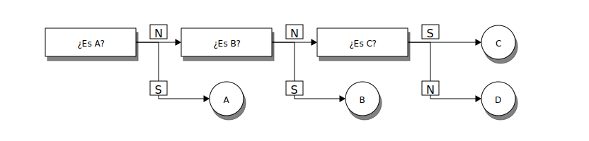
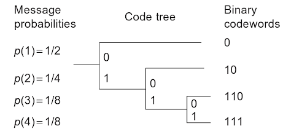

Codificación de fuente
Contenido
%matplotlib inline
import string
import collections
import numpy as np
import matplotlib.pyplot as plt
7. Codificación de fuente¶
Sea una fuente (source) que emite símbolos. El conjunto de todos los símbolos que puede emitir esta fuente se llama alfabeto de fuente.
Ejemplo
Considere el siguiente famoso libro digitalizado
with open('data/quijote.txt', 'r') as file:
texto = file.read()
print(texto[:101] + "...")
En un lugar de la Mancha, de cuyo nombre no quiero acordarme, no ha mucho tiempo que vivía un hidalgo...
Los símbolos de esta fuente incluyen las letras, los números, los signos ortográficos, el espacio en blanco y el salto de linea.
La codificación de fuente (source coding) es el proceso que asigna un código a cada símbolo emitido por la fuente
Importante
Un código es una secuencia de símbolos, los cuales tienen su propio alfabeto: El alfabeto de código.
Ejemplo
Un código muy utilizado para transmitir información es el código binario. El alfabeto del código binario tiene dos elementos: 0 y 1
A partir de estos elementos se pueden formar todo tipo de palabras de código: 00, 01, 101, 10001, …
Digamos que queremos codificar el famoso texto anterior utilizando código binario. La cantidad de símbolos en el alfabeto de fuente es:
len(set(texto))
49
Si utilizamos un código binario de largo fijo para cada símbolo necesitariamos al menos 5 bits: \(2^6 = 64 > 49\)
El largo del texto es:
len(texto)
3029
Y por lo tanto la cantidad de bits utilizando 6 bits por símbolo será:
len(texto)*6
18174
Cerca de 18.000 bits
Sin embargo, esta forma ingenua de codificar no considera el importante hecho de que no todos los símbolos son igual de frecuentes/probables
De los 49 símbolos, los 5 más frecuentes son:
collections.Counter(texto).most_common(5)
[(' ', 540), ('a', 316), ('e', 312), ('o', 201), ('s', 189)]
y los 5 menos frecuentes son:
collections.Counter(texto).most_common()[:-6:-1]
[('B', 1), ('N', 1), ('A', 1), ('C', 1), ('S', 1)]
Consejo
Podemos reducir la cantidad de bits del texto si usamos códigos más cortos para las letras más frecuentes
Para crear un código de largo de palabra variable en base a la probabilidad de aparición de los símbolos debemos estudiar antes la teoría de la información
7.1. Introducción a la Teoría de la información¶
La Teoría de la Información (TI) es el estudio matemático de la cuantificación y transmisión de la información. Fue propuesto por Claude Shannon en 1948: A Mathematical Theory of Communication.
TI proporciona formas para describir la información de un proceso y tiene importantes aplicaciones en telecomunicaciones, computación y biología (genética). También ha tenido una fuerte influencia en la teoría de codificación y compresión.
Partamos con un ejemplo
Ejemplo: Las dos fuentes
Sean dos fuentes F1 y F2 que pueden emitir uno entre cuatro símbolos: \(A\), \(B\), \(C\) o \(D\)
F1 es completamente aleatoria, es decir: \(P(A) = P(B) = P(C) = P(D) = \frac{1}{4}\)
Si queremos predecir el próximo valor emitido por F1 ¿Cúal es el número mínimo de preguntas con respuesta si/no que debemos hacer?

La respuesta es 2 para cualquiera de los símbolos
F2 en cambio emite \(A\), \(B\), \(C\) y \(D\) con probabilidades \(P(A) =\frac{1}{2}\), \(P(B) =\frac{1}{4}\), \(P(C) = \frac{1}{8}\) y \(P(D) =\frac{1}{8}\), respectivamente
Si queremos predecir el próximo valor retornado por F2 ¿Cúal es el número mínimo de preguntas con respuesta si/no que debemos hacer?
{kind=link}
La respuesta es 1 para \(A\), 2 para \(B\) y 3 para \(C\) y \(D\)
7.1.1. Cantidad de información (según Shannon)¶
La cantidad de información de un símbolo \(x\) es el logaritmo en base dos del recíproco de su probabilidad de aparición
que es equivalente a la mínima cantidad de preguntas si/no que debemos hacer para adivinar su valor
La cantidad de información se mide en bits
Importante
Un bit es la cantidad de información requerida para escoger entre dos alternativas equiprobables
La cantidad de información es también llamada sorpresa
Nota
Mientras más improbable es un símbolo, más nos sorprendemos cuando observamos que ocurre
7.1.2. Entropía¶
Sea una variable aleatoria \(X\) (fuente) con \(N\) resultados posibles (símbolos) \(\{x_1, x_2, \ldots, x_N\}\) donde cada símbolo \(x_i\) tiene una probabilidad \(p_i \in [0, 1]\) y \(\sum_{i=1}^N p_i = 1\)
Por ende cada símbolo tiene una cantidad de información \(I(x_i) = -\log_2 \left( p_i \right)\)
Definimos la cantidad de información promedio de \(X\) como
que se conoce como Entropía de Shannon
Propiedades de la entropía
La entropía es siempre positiva \(H(X) \geq 0\). La igualdad se cumple si un \(x_i\) tiene \(p_i=1\) (caso más predecible)
La entropia está acotada \(H(X) \leq H_0\), donde \(H_0= \log_2(N)\) es la entropia si \(p_i = \frac{1}{N}~ \forall i\) (caso menos predecible)
La redundancia de \(X\) es \(1 - H(X)/H_0\)
Nota
Mientras más predecible es \(X\) menor es su entropía y mayor es su redundancia
Ejemplo: El retorno de las dos fuentes
En promedio, ¿Cuántas preguntas por símbolo hace la fuente F1?
\(1 \frac{1}{4} + 1 \frac{1}{4} + 1 \frac{1}{4} + 1 \frac{1}{4} = 2\) preguntas por símbolo. Su entropía es \(2\) [bits]
En promedio, ¿Cuántas preguntas por símbolo hace la fuente F2?
\(1 \frac{1}{2} + 2 \frac{1}{4} + 3 \frac{1}{8} + 3 \frac{1}{8} = 1.75\) preguntas por símbolo. Su entropía es \(1.75\) [bits]
Si cada fuente retorna un mensaje de 100 símbolos ¿Cúanta información produjo cada una?
F1 produce 200 bits mientras que F2 produce 175 bits
Mientras más predecible menos información se necesita
Ejemplo: Moneda con truco
Sea una variable aleatoria \(X\) que modela el resultado de lanzar una moneda y asumamos que el resultado puede tomar solo dos valores: Cara \(o\) o Cruz \(x\)
La probabilidad de que salga cara es \(p_o = p\)
La probabilidad de que salga cruz es \(p_x = 1- p\)
Luego la entropía es
Reflexione:
¿En que casos la entropía es mínima? ¿En qué caso es máxima?
¿Puedes relacionar la entropía con la aleatoridad/sorpresa del resultado de lanzar la moneda?
Ojo: \(\lim_{z\to 0^+} z \log 1/z = 0\)
p = np.linspace(0.01, 0.99, num=100)
H = -p*np.log2(p) - (1-p)*np.log2(1-p)
fig, ax = plt.subplots(1, figsize=(6, 4), sharex=True)
ax.set_xlabel('p')
ax.plot(p, -np.log2(p), label='I(o)', lw=3)
ax.plot(p, -np.log2(1-p), label='I(x)', lw=3)
ax.plot(p, H, label='H(X)', lw=3)
ax.set_ylim([0, 3])
plt.legend();
Ejemplo: Entropía del fragmento del famoso libro
La entropía o cantidad de información promedio por símbolo es
freq = np.array(list(collections.Counter(texto).values()))
p = freq/np.sum(freq)
H = -np.sum(p*np.log2(p))
H
4.212472766686091
Luego podemos estimar la cantidad de bits del famoso texto como:
H*len(texto)
12759.580010292168
Más adelante veremos que tan acertado está este cálculo
Ejemplo: Meteorólogos del siglo XIX
Nos encontramos a finales del siglo XIX. La estación meteorológica de Niebla hace una predicción del tiempo en Valdivia. Esta información se envía a Valdivia a través de telégrafo.
Calcule la cantidad de información promedio que envía la estación a Valdivia en cada uno de los siguientes escenarios usando la entropía de Shannon
Dos posibilidades: Lluvia y nublado, con probabilidad \(1/2\) y \(1/2\), respectivamente
Una posibilidad: Lluvia, con probabilidad \(1\)
Cuatro posibilidades: Lluvia, Nublado, Nubosidad parcial, soleado, con probabilidad \(1/2\), \(1/4\), \(1/8\) y \(1/8\), respectivamente
Respuesta:
Las probabilidades de cada mensaje son \(2^{-1}\), \(2^{-2}\), \(2^{-3}\) y \(2^{-3}\). Luego la cantidad de información de cada mensaje es: 1, 2, 3 y 3 bits, respectivamente. Por ende la entropía es \(1/2 + 1/2 + 3/8 + 3/8 = 1.75\) bits
7.1.3. Código de largo de palabra variable¶
Para el escenario 3 del ejemplo anterior códifique las alternativas usando un alfabeto de códigos binarios
¿Cómo le asignamos un código a cada alternativa?
Opción 1: Código de largo fijo
Tenemos cuatro estados.
Si todos los estados tienen igual cantidad de bits, necesitamos 2 bits para representarlos: 00, 01, 10, 11
En este caso resulta equivalente a asumir equiprobabilidad y la entropía es 2 bits
Opción 2: Código de largo variable (prefijo)
Se usa 1, 2, 3 y 3 bits para cada estado, según su probabilidad de aparición. En este caso la entropía es 1.75 bits
Podemos describir este escenario según
Primera decisión equiprobable: Lluvia (0) vs El resto (1)
Segunda decisión equiprobable: Nublado (10) vs El resto menos lluvia (11)
Tercera decisión equiprobable: Nubosidad parcial (110) vs soleado (111)
Podemos representar graficamente usando un dendograma como se muestra a continuación
{kind=link}
Algoritmo de codificación con forma de árbol en base 2
Los mensajes codificados están en las hojas del árbol
Código préfijo: Ningún código puede ser prefijo de otro.
El código prefijo garantiza decodificación sin ambiguedad
Ejercicio
Decodifique la predicción del tiempo para los próximos tres días: 101100
Ejercicio
Si el código de lluvia fuera 1 en lugar de 0, decodifique el siguiente mensaje: 11111
(Este es un ejemplo de código ambiguo)
7.2. Codificación de Huffman¶
La codificación de Huffman es un algoritmo sencillo de codificación de tipo prefijo:
Se estima la probabilidad \(p_i\) de cada símbolo
Se ordenan los símbolos en orden descendente según \(p_i\)
Juntar los dos con probabilidad menor en un grupo, su probabilidad se suma
Volver al paso 2 hasta que queden dos grupos
Asignarle 0 y 1 a las ramas izquierda y derecha del árbol, respectivamente
El código resultante se lee desde la raiz hasta la hoja
{kind=link}
Ejemplo: Codificación de Huffman del famoso texto
Primero estimamos la frecuencia usando collections.Counter
Luego construimos el dendograma usando heapq
Terminamos con un diccionario que transforma cada símbolo del texto en un código
# Implemetación adaptada de https://rosettacode.org/wiki/Huffman_coding#Python
import heapq
# Construir dendograma con las probabilidades ordenadas
dendograma = [[frequencia/len(texto), [simbolo, ""]] for simbolo, frequencia in collections.Counter(texto).items()]
heapq.heapify(dendograma)
# Crear el código
while len(dendograma) > 1:
lo = heapq.heappop(dendograma)
hi = heapq.heappop(dendograma)
for codigo in lo[1:]:
codigo[1] = '0' + codigo[1]
for codigo in hi[1:]:
codigo[1] = '1' + codigo[1]
heapq.heappush(dendograma, [lo[0] + hi[0]] + lo[1:] + hi[1:])
# Convertir código a diccionario
dendograma = sorted(heapq.heappop(dendograma)[1:])
dendograma = {simbolo : codigo for simbolo, codigo in dendograma}
display(dendograma)
{'\n': '11011100100',
' ': '111',
'(': '11011100101',
')': '11011100110',
',': '100010',
'.': '00010010',
':': '0001111110',
';': '00010011',
'A': '110111001110',
'B': '110111001111',
'C': '110111010000',
'E': '0001111111',
'F': '11011101001',
'M': '110111010001',
'N': '110111010100',
'Q': '1101110110',
'S': '110111010101',
'T': '110111010110',
'U': '110111010111',
'a': '010',
'b': '100011',
'c': '10100',
'd': '11010',
'e': '001',
'f': '10101110',
'g': '1010110',
'h': '1010100',
'i': '11000',
'j': '00011110',
'l': '0110',
'm': '110110',
'n': '0111',
'o': '1011',
'p': '000110',
'q': '000101',
'r': '0000',
's': '1001',
't': '10000',
'u': '11001',
'v': '1010101',
'x': '110111011100',
'y': '1101111',
'z': '10101111',
'á': '110111000',
'é': '11011101111',
'í': '0001110',
'ñ': '000111110',
'ó': '0001000',
'ú': '110111011101'}
Ahora podemos convertir el texto en una tira binaria
texto_codificado = ""
for letra in texto:
texto_codificado += dendograma[letra]
display(texto_codificado[:1000])
'0001111111011111111001011111101101100110101100100000111110100011110110010111110111010001010011110100101010001010001011111010001111101001100111011111011111011110111101101000110000001111011110111110001011100111000001000010111110101010010110000110100100000110110001100010111011110111111010100010111110110110011010010101001011111100001100000111011000011010111110001011100100111110101011100010101010001110010111110010111111101010011000110100100110101011010111111101000111101101011100111111010001111011001001111010111101011100101111110101001100001100001100110001000010111000101110101101001000001010110010111010011110000110001010110110010101000101110000101110100000111001111111010111001100101010010111111101111111101011001001101010110101111110100101100000000001110101011000000010010111110111010111011101011110110110011001011111010001111010011010101101011111110110110111000100111110101010101010001011100010111001001111101000100000011100100001011100010111100101001100001101100010100000100001111110110010100111'
Podemos usar bytearray para convertir nuestra tira de caracteres 0 y 1 a un arreglo de Bytes
b = bytearray()
for i in range(0, len(texto_codificado), 8): # Si el largo del texto no es múltiplo de 8 debemos hacer padding
byte = texto_codificado[i:i+8]
b.append(int(byte, 2))
Guardando el archivo en disco:
with open("quijote_comprimido.bin", "wb") as f: # Texto codificado
f.write(bytes(b))
!du -B1 --apparent-size quijote_comprimido.bin
1608 quijote_comprimido.bin
Pesa 1608 Bytes, es decir 12864 bits
En la práctica, para poder descomprimir el texto necesitamos también anexar el diccionario de codificación (dendograma)
with open("quijote_comprimido.bin", "wb") as f: # Agregamos el diccionario en el header
f.write(str(dendograma).encode())
with open("quijote_comprimido.bin", "a") as f: # salto de linea
f.write("\n")
with open("quijote_comprimido.bin", "ab") as f: # Texto codificado
f.write(bytes(b))
!du -B1 --apparent-size quijote_comprimido.bin
2446 quijote_comprimido.bin
En el script quijote_recuperado.py puedes revisar como se descomprime el texto
7.3. Teorema de codificación de fuente de Shannon (Source coding theorem)¶
Dada una variable aleatoria \(X\) con entropía \(H(X)\) existe una codificación de largo variable cuyo largo de palabra promedio \(\bar L\) satisface
Es decir que el límite inferior teórico del largo de palabra es \(H(X)\). Esta codificación sin pérdida y de largo variable la llamamos codificación entrópica
Este teorema nos dice cuanto podemos comprimir una señal sin que hayan pérdidas antes de enviarla por un canal (libre de ruido)
También justifica la definición de entropía como medida de la cantidad de información
Otra forma de ver el teorema:
Sea una fuente \(X\) que emite \(N\) mensajes.
Los N mensajes pueden comprimirse en \(N H(X)\) [bits] o más con riesgo de pérdida despreciable (\(N\to\infty\))
Por el contrario
Si comprimimos en menos de \(N H(X)\) [bits] la pérdida está garantizada
Demostración
Sea una codificación C para una variable aleatoria \(X\) con N posibles símbolos
Cada símbolo \(x_i\) tiene una probabilidad de ocurrencia \(p_i \in [0, 1]\) con \(\sum_i p_i = 1\) y un largo de código \(L_i\)
Luego el largo promedio de los códigos es
¿Qué valores de \(L_i\) resultan en el menor \(\bar L\)?
El largo óptimo es \(L_i^* = -\log_2 p_i\) y el promedio sería \(\bar L^* = H(X)\)
Digamos que proponemos otro largo \(\hat L_i = - \log_2 q_i\), asumiendo que \(\sum_i q_i = 1\)
Luego el largo promedio sería
Con esto probamos que no hay mejor largo que \(-\log_2 p_i\)
Notemos que los \(L_i^*\) no tendrían porque ser un número enteros
Nota
En general la codificación óptima cumple: \(H(X) \leq \bar L^* < H(X) + 1\)
Se puede estar entre esas cotas con el algoritmo de Huffman
La codificación aritmética en cambio casi siempre llega a la cota inferior
La codificación de Huffman y aritmética son codificaciones entrópicas